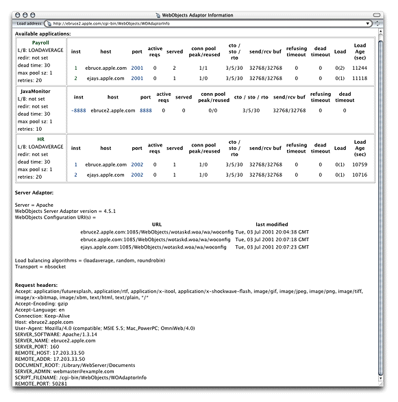

| PATH |

The WebObjects Adaptor Information page displays information about an HTTP adaptor. Access to this page is disabled by default so you must modify the adaptor configuration file to allow access. See "Setting Access to the WebObjects Adaptor Information Page" for details. Figure 4-7 shows an example of the WebObjects Adaptor Information page.
Figure 4-7 The WebObjects Adaptor Information page
